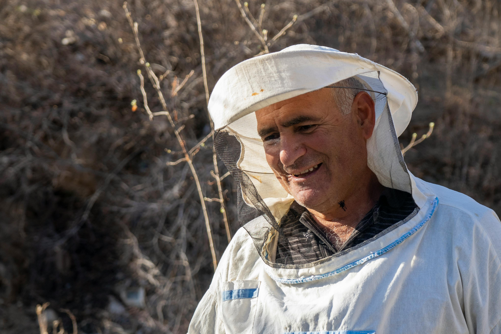
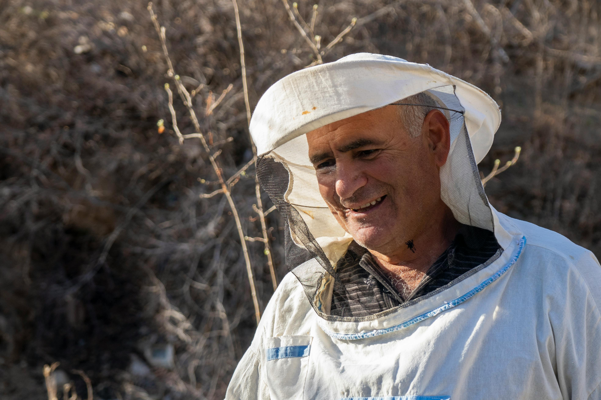

Notre Savoir-faire Apicole
Découvrez les techniques traditionnelles et modernes que nous utilisons pour préserver la santé de nos abeilles et produire un miel d'exception, dans le respect de la nature.
Nos Techniques Apicoles
Gestion des Ruches
Surveillance régulière, contrôle sanitaire et adaptation aux besoins saisonniers de nos colonies pour garantir leur bien-être.
Élevage de Reines
Sélection et élevage de reines robustes pour maintenir la vitalité et la productivité de nos colonies.
Récolte Artisanale
Extraction douce à froid pour préserver toutes les qualités nutritionnelles et gustatives de notre miel.
Le Calendrier de l'Apiculteur
Printemps
Mars - Mai
- • Première visite des ruches
- • Contrôle de la ponte
- • Pose des hausses
- • Prévention de l'essaimage
Été
Juin - Août
- • Récolte du miel
- • Extraction et filtrage
- • Surveillance sanitaire
- • Gestion de la ventilation
Automne
Septembre - Novembre
- • Préparation hivernage
- • Traitement anti-varroa
- • Nourrissement d'appoint
- • Réduction des entrées
Hiver
Décembre - Février
- • Repos des colonies
- • Entretien du matériel
- • Formation continue
- • Préparation saison suivante
Notre Engagement Qualité
Une Approche Respectueuse
Notre philosophie repose sur le respect de l'abeille et de son environnement. Nous privilégions les méthodes douces et naturelles, sans traitement chimique agressif, pour préserver l'écosystème de la ruche.
- Apiculture biologique certifiée
- Extraction à froid préservant les enzymes
- Traçabilité complète de la ruche au pot
Qualité Premium
Plus de 20 ans d'expérience au service d'un miel d'exception
Innovation & Tradition
Suivi Digital
Utilisation de capteurs IoT pour surveiller la température, l'humidité et l'activité de nos ruches en temps réel.
Méthodes Ancestrales
Respect des techniques traditionnelles transmises de génération en génération, adaptées aux défis contemporains.
Formation Continue
Participation régulière à des formations et échanges avec d'autres apiculteurs pour améliorer constamment nos pratiques.
Notre Savoir-faire en Images

 

"Si l’abeille venait à disparaître, l’homme n’aurait plus que quatre années à vivre."
— Proverbe attribué à Einstein
Ils parlent de notre miel
"Un goût pur, floral et doux. On sent la passion derrière chaque pot."
– Claire, cliente fidèle
"Enfin un miel artisanal digne de ce nom. Bravo pour votre savoir-faire."
– Marc, chef pâtissier
"Chaque cuillerée est un voyage sensoriel. Merci pour ce délice."
– Sophie, naturopathe